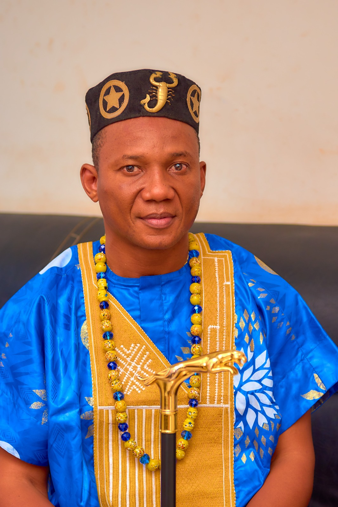
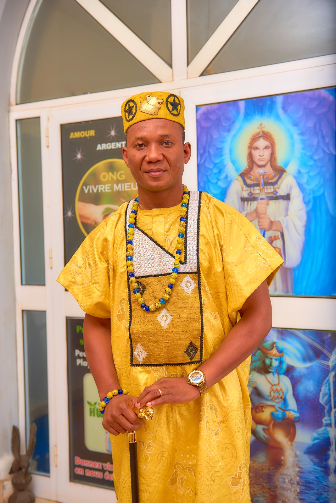
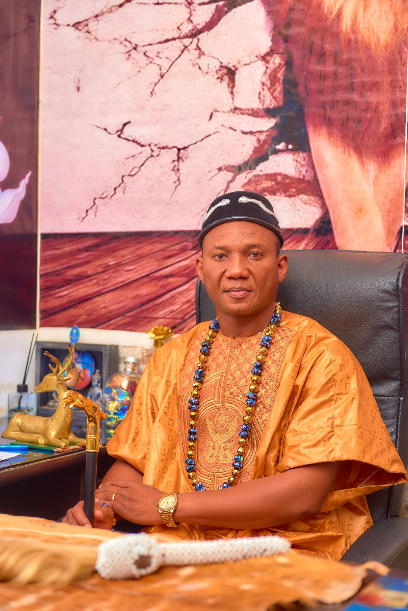
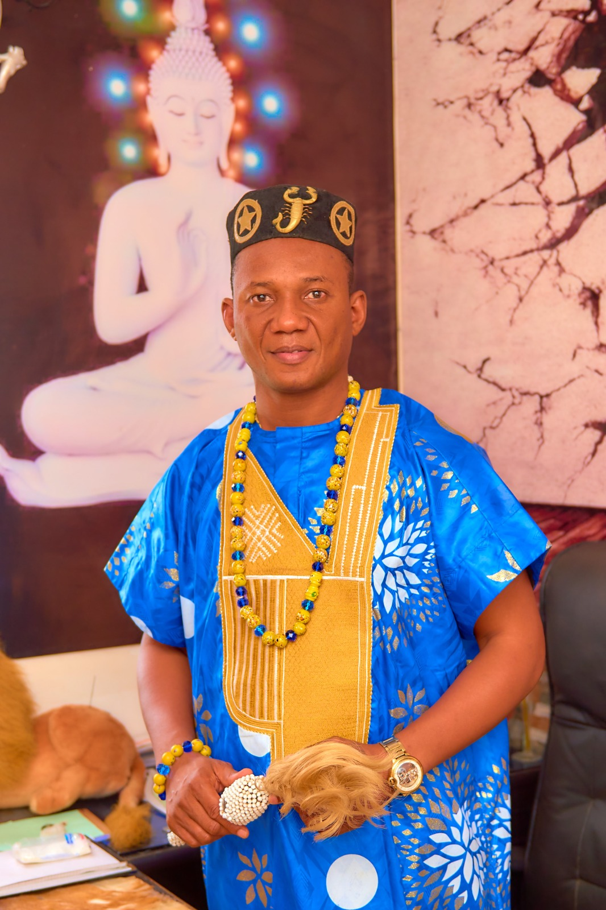
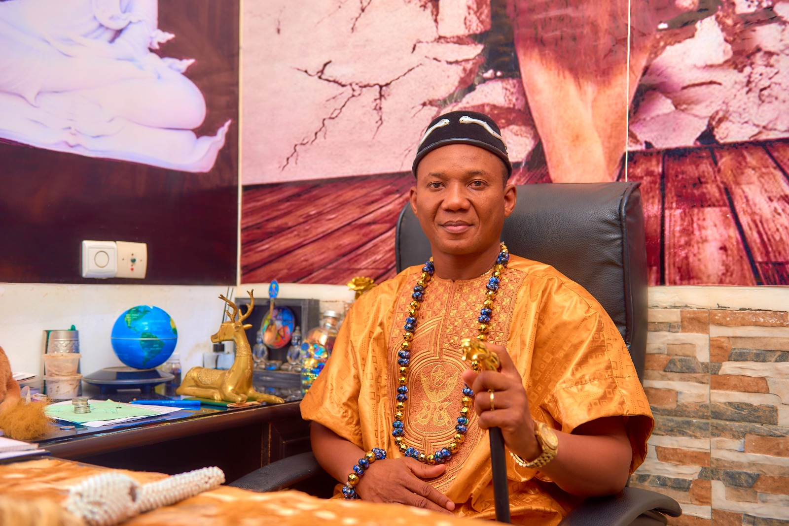

Né le 08 Août 1977 à Parakou, YEHOUME Cyriaque Stanislas — communément appelé TAN par ses proches — est l'un des spiritualistes les plus reconnus et respectés d'Afrique de l'Ouest. Sa vie est un témoignage vivant de la grâce divine et de la puissance des traditions endogènes béninoises.
À l'âge de 7 ans, une dame visionnaire d'une église céleste de Natitingou révèle à sa maman que cet enfant sera un grand visionnaire de Dieu au service de l'humanité. Pendant les 30 premières années de sa vie, il reste fidèle à cette église tout en cultivant une passion dévorante pour l'informatique.
Fondateur de SUPERMAN INFORMATIQUE, il forme pendant des décennies des milliers de Béninois aux métiers du numérique. À ce jour, plus de 25 000 personnes ont été formées dans sa structure, faisant de lui un pionnier de l'éducation numérique au Bénin.
Passionné de spiritualité, il étudie l'astrologie par correspondance de 2007 à 2009 auprès de la grande astrologue suisse Nicole Delya. Il diffuse des brochures spirituelles appelées VIVRE MIEUX et crée la boutique Océan au sein de Radio Océan à Caboma.
En 2011, il fonde l'ONG VIVRE MIEUX pour la promotion des valeurs endogènes positives, regroupant plusieurs tradithérapeutes. Puis vient le tournant décisif de sa vie : le rêve de son grand-père paternel décédé lui remettant une feuille verte, symbole de sa vraie mission sur Terre.
Sa première émission d'astrologie sur Radio Océan date de juin 2012, moment où il adopte le nom Rabbi TAN — Maître TAN — TAN signifiant Tolérance Amour Naturel. Depuis, il s'est entièrement consacré à la spiritualité, installant ses cabinets au Bénin, en France, en Allemagne, aux USA, en Côte d'Ivoire, au Togo et bien au-delà.




Naissance de YEHOUME CYRIAQUE STANISLAS, fils de YEHOUME ÉLIE et ATCHADÉ ÉLISABETH, le 08 Août 1977 à Parakou, au nord du Bénin. Un enfant destiné à la grandeur dès le premier souffle.
NaissanceUne dame visionnaire d'une église céleste de Natitingou révèle à sa mère que ce garçon sera un grand visionnaire de Dieu au service de l'humanité. Le jeune Cyriaque reste fidèle à cette église pendant ses 30 premières années sur Terre.
ProphétiePassionné d'informatique, il crée sa propre structure : SUPERMAN INFORMATIQUE. L'école forme des générations entières aux métiers du numérique. À ce jour, plus de 25 000 personnes au Bénin ont été formées dans ses locaux.
Éducation & NumériqueIl suit des cours d'astrologie par correspondance auprès de la grande astrologue d'origine suisse Nicole Delya. Il diffuse ses brochures spirituelles VIVRE MIEUX et ouvre la Boutique Océan dans l'enceinte de Radio Océan à Caboma.
Formation AstrologiqueIl fonde l'ONG VIVRE MIEUX, chargée de la promotion des valeurs endogènes positives du Bénin. L'organisation regroupe plusieurs tradithérapeutes et œuvre pour la valorisation des pratiques ancestrales africaines.
Engagement SocialÀ 33 ans, son grand-père paternel YEHOUME Simon — décédé — lui remet une feuille verte dans un rêve. Au réveil, une voix lui dit : "Tu dois te mettre au devant de la scène pour servir ton Créateur. Car tu es né avec le don de guérir l'Esprit, l'Âme et le Corps."
Appel DivinIl effectue sa première émission d'Astrologie sur Radio Océan et adopte le nom de Rabbi TAN — Maître TAN. TAN signifie : Tolérance Amour Naturel. Le 14 Août 2012, il apprend le décès de son père lors de sa première consultation à Porto-Novo.
Naissance du MaîtreRabbi TAN installe ses cabinets dans plusieurs villes du Bénin, puis voyage en Côte d'Ivoire, Sénégal, Inde, Togo, France, Suisse et Allemagne pour guérir l'esprit, l'âme et le corps de milliers de personnes. Sa renommée dépasse les frontières africaines.
Mission MondialeSa Majesté KPODEGBE LANMANFAN DJIGLA l'intronise au titre de Mèhou — le plus proche du roi — Ministre des Affaires Sociales du Palais Royal d'Allada. Il reçoit ses noms de dignitaire : DAH MèHOU MèTOLé SOUNVI SOUNKPè KPOTCHèDJI.
Intronisation RoyaleIl installe à Hèvié (Abomey-Calavi) le Temple des Grandes Victoires "TGV", abritant 10 divinités endogènes : LISSA, Lègba Minon Nan, Tohossou, Sakpata, Dan Ayidohouèdo, Hèviesso, Gou, Hooho et Assin. Cérémonie du Fâ officiée par des prêtres assermentés.
Temple SacréIl crée la Radio HWENDOHO, une chaîne accessible partout dans le monde via internet, entièrement dédiée à la promotion de la culture béninoise et des valeurs endogènes africaines. Diffusion 24h/24, 7j/7.
Média CulturelIntronisé le 14 décembre 2020, Ministre des Affaires Sociales du Palais Royal d'Allada par Sa Majesté KPODEGBE LANMANFAN DJIGLA. Le titre le plus proche du roi.
Prêtre du Tohio DangBé VODOUN HOUéSSIYO dans sa famille paternelle à Allada-Togoudo. Garant des traditions ancestrales et des rituels sacrés de sa lignée.
Président d'Honneur de l'Association des Dignitaires de la Religion Endogène de l'Atlantique. Choisi par les membres pour représenter et promouvoir la spiritualité endogène béninoise.
Président d'Honneur des Élites du Bénin, association de promoteurs culturels qui œuvre activement dans le domaine social pour contribuer au bien-être de la population béninoise.
Fondateur de Superman Record, maison de production musicale ayant mis sur le marché béninois plusieurs clips et sons. Promoteur de la culture musicale et artistique du Bénin.
Créateur et fondateur de la Radio HWENDOHO, chaîne internationale de promotion de la culture béninoise. Accessible 24h/24 sur téléphone portable ou ordinateur partout dans le monde.
Plus de 25 000 personnes formées aux métiers du numérique au Bénin depuis la création. L'une des plus grandes écoles informatiques privées du pays, un héritage éducatif monumental.
Fondée en 2011, cette ONG promeut les valeurs endogènes positives du Bénin et regroupe plusieurs tradithérapeutes. Elle contribue au mieux-être social et culturel des communautés.
Temple unique à Hèvié, Abomey-Calavi, abritant 10 divinités endogènes. Lieu de consultation spirituelle, de cérémonie du Fâ et de protection. Ouvert 7j/7, 24h/24.
Chaîne radio internationale dédiée à la promotion de la culture béninoise. Accessible depuis n'importe quel pays du monde via internet sur téléphone ou ordinateur en continu.
Maison de production musicale ayant lancé plusieurs clips et sons béninois sur le marché national. Promoteur des artistes locaux et de la culture musicale de la nation.
Association de promoteurs culturels dont il est le Président d'Honneur. Ses membres œuvrent activement dans le domaine social pour contribuer au bien-être de la population béninoise.
DAH MÈHOU KPOTCHÈDJI RABBI TAN, l'Homme qui voit la fourmi noire dans la nuit noire sur le tissu noir, la Truelle de DIEU, l'Amoureux de DIEU, le Révélateur des Secrets de Réussite, m'engage corps et âme pour révéler notre culture au monde entier.
Sègbo Lissa vous bénisse abondamment !!!